VILÕES DE GOTHAM CITY
Gotham city é uma cidade fictícia da DC comics e lar do Batman, conhecida por abrigar mentes criminosas geniais, chefes do crime organizado e assassinos implacáveis.
DS1
Gotham city é uma cidade fictícia da DC comics e lar do Batman, conhecida por abrigar mentes criminosas geniais, chefes do crime organizado e assassinos implacáveis.
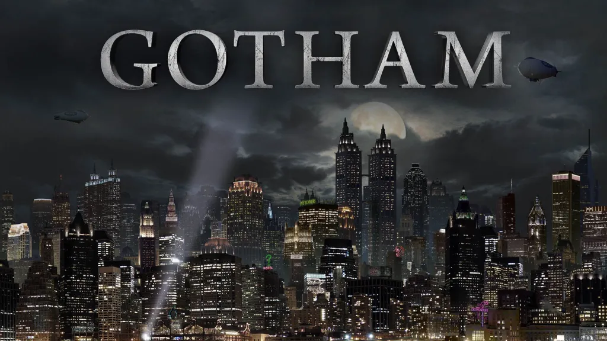
Conheça os criminosos mais perigosos de Gotham City
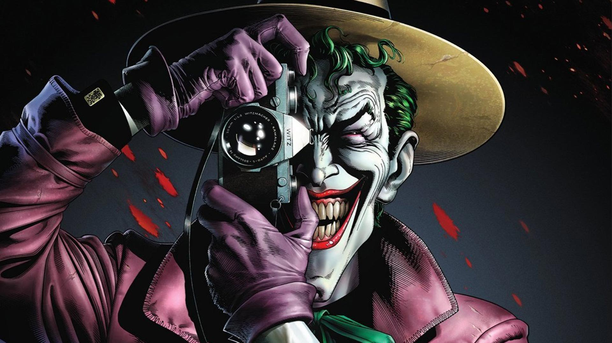
O Coringa é o psicopata e arqui-inimigo do Batman, marcado pelo visual de palhaço e por espalhar o caos em Gotham City. Sem identidade real definida, o vilão busca provar a loucura do mundo.
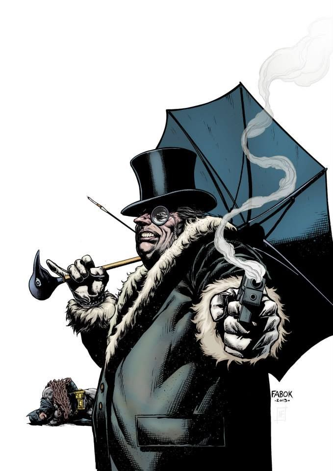
Pinguim é um mafioso e clássico inimigo do Batman, marcado pela baixa estatura, uso de guarda-chuvas tecnológicos e pelo controle do crime em Gotham City. Racional e focado em poder e dinheiro, o vilão comanda o submundo da cidade.
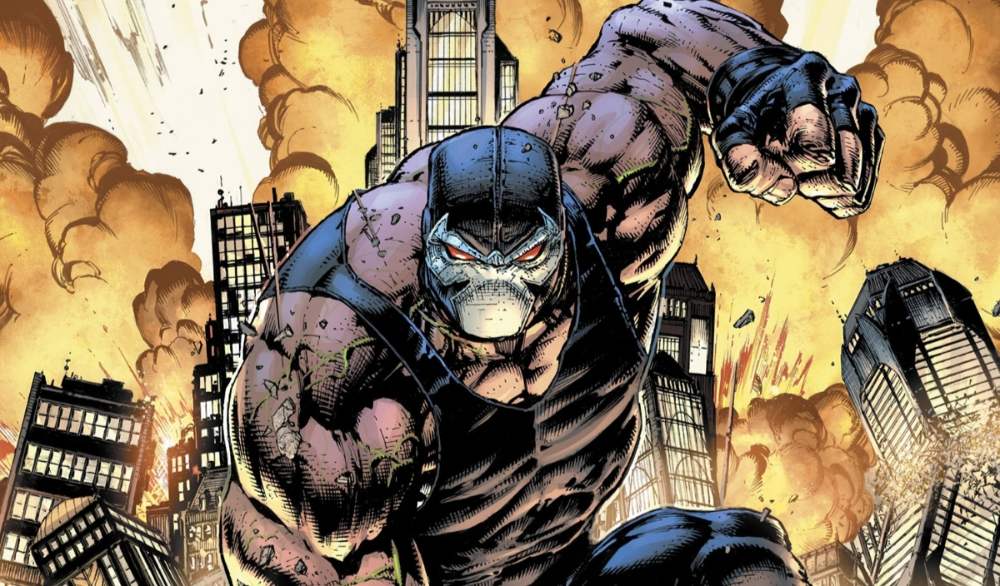
O Bane é um dos vilões mais perigosos do Batman, conhecido por sua força brutal ampliada pela droga Venom e por sua inteligência genial. Ele entrou para a história dos quadrinhos como "o homem que quebrou o Morcego" ao lesionar a coluna do herói.
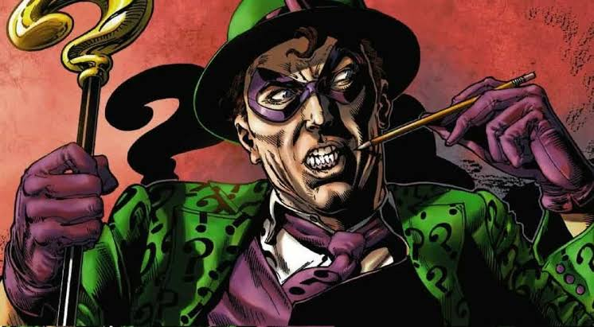
O Charada (Edward Nygma) é um criminoso genial e obsessivo de Gotham City que desafia o Batman com enigmas, quebra-cabeças e armadilhas complexas.
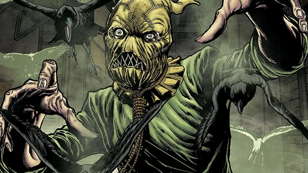
é um ex-psicólogo obcecado pelo medo que usa uma máscara assustadora e sua famosa toxina do medo para causar alucinações terríveis em Gotham City.
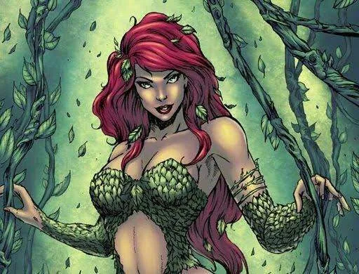
A Venenosa é uma vilã conhecida por seu poder de manipulação e uso de venenos letais. Ela é uma rival do Batman e tem sido uma ameaça constante para a cidade de Gotham.
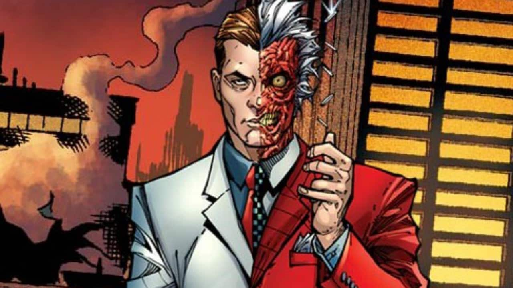
Duas Caras (Harvey Dent) é um ex-promotor público de Gotham City que se tornou um vilão após um acidente que desfigurou metade de seu rosto. Ele é conhecido por sua obsessão com a dualidade e a justiça, decidindo o destino de suas vítimas com uma moeda.
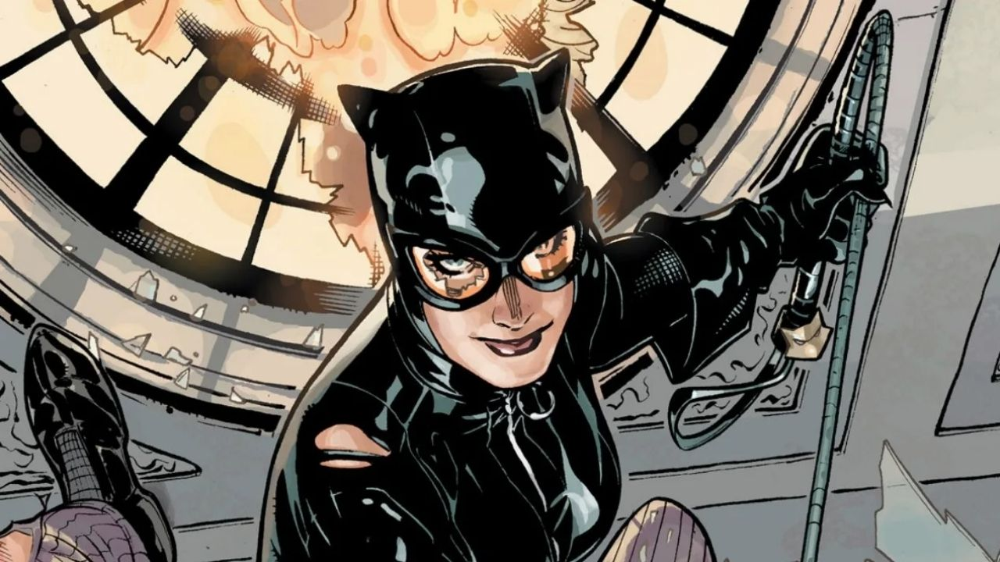
A Mulher Gato (Selina Kyle) é uma ladra habilidosa e anti-heroína de Gotham City, conhecida por sua agilidade, habilidades de combate e seu relacionamento complexo com o Batman.
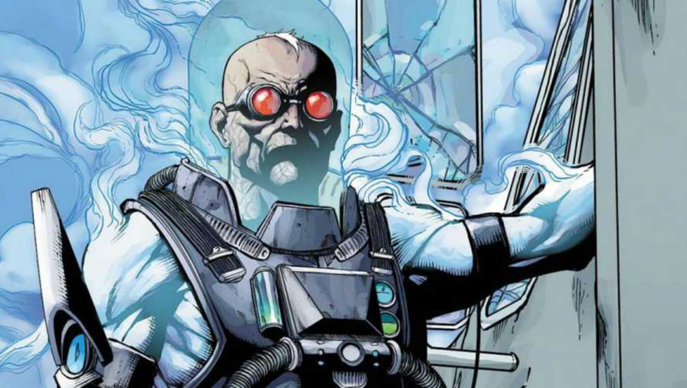
O Senhor Frio (Victor Fries) é um vilão de Gotham City que utiliza uma tecnologia avançada para criar gelo e frio extremo. Ele é motivado por sua obsessão em salvar sua esposa doente, o que o leva a cometer crimes.
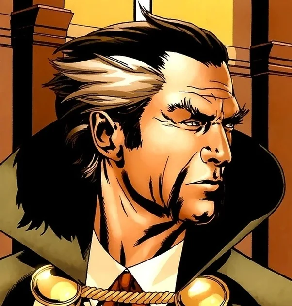
Ras Al Ghul é o líder da organização criminal League of Assassins e o principal antagonista do Batman. Ele é conhecido por sua sabedoria, poder e determinação em destruir Gotham City.